AI Academy · Level 4 · Grade 9 · Week 21 · Student lesson
Absolute Error and MAE
Learn to understand, design, build, test and explain AI systems responsibly.
Project: Responsible Plant Classifier
Before you start
Week 19: absolute error cannot be negative.
Plan time to read, investigate and explain. Keep predictions separate from observations.
Student lesson · 1 of 17
Your mission
Your learning target
I can calculate MAE MSE and RMSE.
I can explain how squaring changes sensitivity to large errors.
I can match the loss and units to the task.
Remember before reading
Close your notes first. A rough first answer helps us choose the right starting point; it is not a score for your ability.
Without opening the old lesson, explain one key idea from Mean, Median, and Baselines. Give an example and a mistake that the idea helps you avoid.
Without opening the old lesson, explain one key idea from Error Analysis. Give an example and a mistake that the idea helps you avoid.
Without opening the old lesson, explain one key idea from Confusion Matrix. Give an example and a mistake that the idea helps you avoid.
After trying, check the relevant lesson or ask your teacher. Change the part of your explanation that the evidence shows was wrong.
Absolute error measures distance from truth without cancellation; MAE averages those distances in the target's original unit.
Builder name and experiment date:
Readiness for the connected explanation
Which constant minimizes training squared error?
This week’s end goal
By the end, I can explain absolute error and mae using a traced example and a stated limitation.
Student lesson · 2 of 17
Notice the evidence
PICTURE ENTRY
Notice → Predict → Explain
Begin with visible evidence; do not explain more than the picture and information support.
Name three visible details without interpreting them.
Predict the data, model, or evaluation decision being made.
Identify one hidden assumption that could change the result.
State what evidence would confirm or reject your prediction.
My prediction and supporting evidence:
A closer explanation
A loss summarizes error magnitude without positive and negative cancellation. MAE averages absolute residuals. MSE averages squared residuals and penalizes large magnitudes more strongly. RMSE takes the square root of MSE so it returns to the target unit. These are different questions, not interchangeable labels.
Use fictional classroom data throughout this investigation. Keep the task, units, reference labels and data split visible as you reason. Earlier weeks supplied the model-building process; this week examines absolute and squared loss.
Student lesson · 3 of 17
See how it works
ML MECHANISM
Input → Model → Evidence
Trace the information, fitted behavior, and evaluation proof separately.
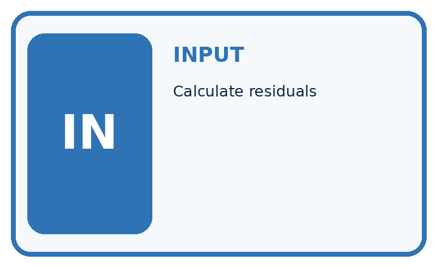
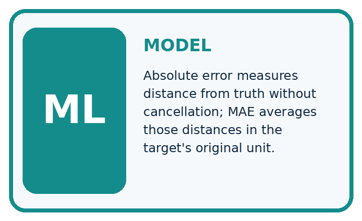
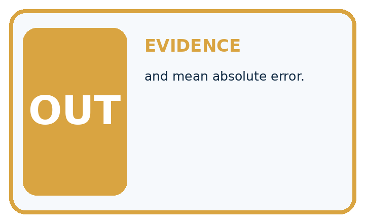
QUESTION Calculate residuals, absolute errors, and mean absolute error.
MODEL IDEA Absolute error measures distance from truth without cancellation; MAE averages those distances in the target's original unit.
PROOF NEEDED Use an unseen case, visible calculation, error analysis, and a stated limitation.
Draw a fresh data → model → prediction → evaluation trace:
A closer explanation
Residuals [-1, 2,-3] cm have absolute errors [1, 2, 3], so MAE=6/3=2 cm. Squared errors [1, 4, 9] sum to 14, so MSE=14/3 square cm and RMSE=sqrt(14/3), about 2.16 cm. Keep the square and the average in the correct order.
from math import sqrt
residuals = [-1, 2, -3]
mae = sum(abs(r) for r in residuals) / len(residuals)
mse = sum(r * r for r in residuals) / len(residuals)
print(mae, mse, sqrt(mse))
# About 2.0, 4.67, 2.16.
# MAE and RMSE: cm. MSE: square cm.Trace the calculation on paper before running this optional Python check. Use the stated fictional inputs and compare intermediate values. The code checks this example; your independent workbook case uses different evidence.
Connect the picture and the explanation
Point to the input, the deciding step and the result in this week’s visual. Explain the same step in ordinary words. A picture helps when you can say what each part represents.
Student lesson · 4 of 17
Compare the cases
EVALUATION DESIGN
Four Tests, Four Kinds of Evidence
A system is not understood until it survives more than one comfortable example.


NORMAL Expected data and expected behavior.
BOUNDARY Value close to a threshold, ambiguous label, or uncertain prediction.
MISSING Necessary field, label, source, or measurement is unavailable.
SHIFTED New lighting, species, device, subgroup, or time condition.
Which case most threatens today's claim, and why?
Change one thing in the pictured case
Change: Convert every residual to millimetres.
Prediction: MAE becomes20 mm; MSE becomes1400/3 mm²; RMSE becomes about21.60 mm.
Reason: Residuals scale by10; squares scale by100, while the square root returns a length unit.
Student lesson · 5 of 17
Words that unlock the idea
VOCABULARY
Words You Can Calculate and Defend
A definition matters when it lets you interpret a new dataset, model, or result.
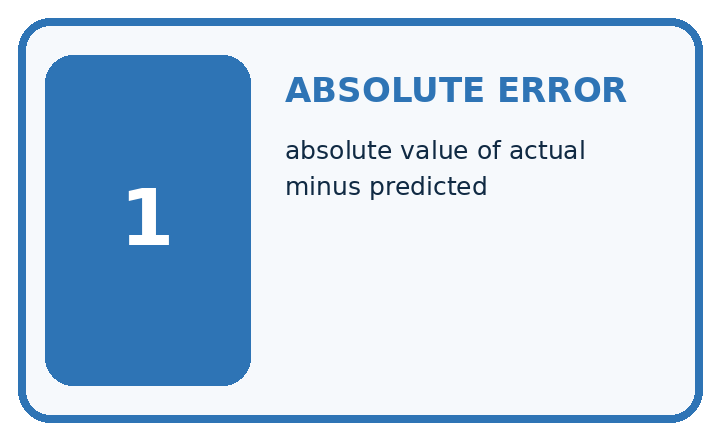
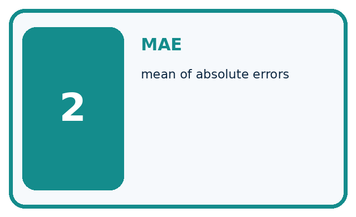
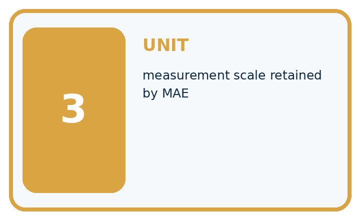
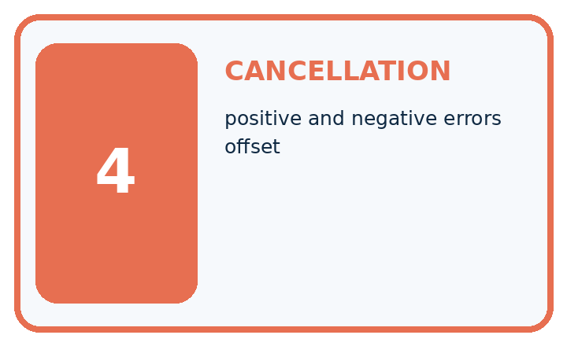
| Term | Precise meaning | My ML example |
|---|---|---|
| absolute error | absolute value of actual minus predicted | |
| MAE | mean of absolute errors | |
| unit | measurement scale retained by MAE | |
| cancellation | positive and negative errors offset |
Repair the claim using a definition, calculation, or test record:
Words used in the closer explanation
| Word | Meaning |
|---|---|
| MAE | Mean absolute error |
| MSE | Mean squared error |
| RMSE | Square root of mean squared error |
| Loss | A numerical penalty for prediction errors |
Student lesson · 6 of 17
Follow a worked example
WORKED EVIDENCE
Reason Step by Step
Predict first. Then check each step. A correct answer without visible evidence cannot be audited.
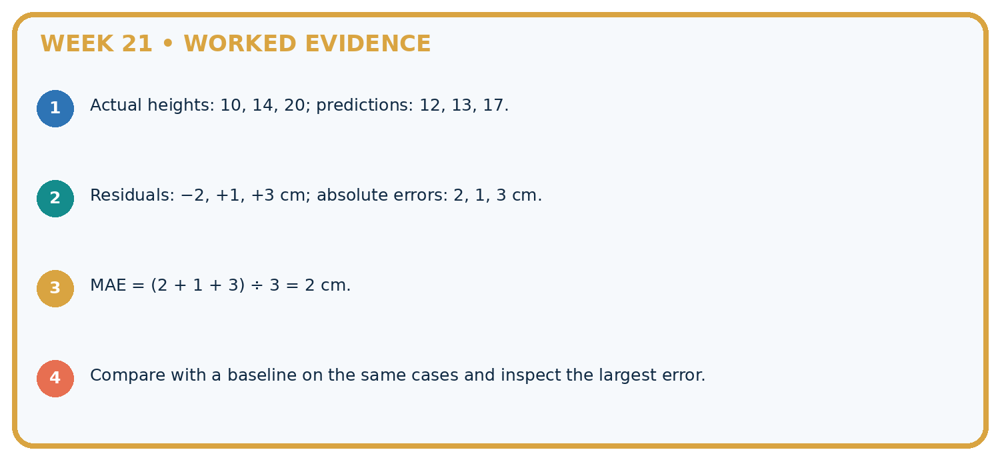
STEP 1 Actual heights: 10, 14, 20; predictions: 12, 13, 17.
STEP 2 Residuals: −2, +1, +3 cm; absolute errors: 2, 1, 3 cm.
STEP 3 MAE = (2 + 1 + 3) ÷ 3 = 2 cm.
STEP 4 Compare with a baseline on the same cases and inspect the largest error.
Recalculate, retrace, or restate the evidence independently:
A closer explanation
Absolute and squared loss at a glance
Learn from the worked case
Cover the result before checking it. Say what is given, choose the procedure, and follow one step at a time. Then uncover the result and explain your first mismatch. Ask why a step is allowed, not only what number it produces.
A pictorial worked case: Absolute Error and MAE
Compare absolute and squared error without losing track of units.
The facts we will use
Residuals are [-1, 2, 3] cm. Use MAE=mean absolute residual and MSE=mean squared residual.
All inputs and outcomes in this worked example are invented classroom data; no real model run is claimed.
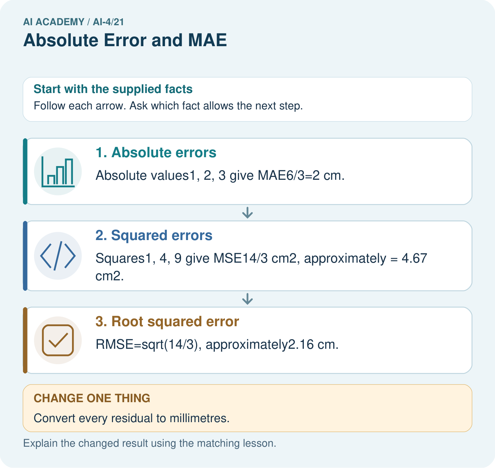
Read the picture one step at a time
Why this result follows
Read the picture in order. RMSE=sqrt(14/3), approximately2.16 cm. The arrows show which recorded input or intermediate result each decision uses. Explain the deciding step aloud before checking the changed case; pointing to the final answer alone does not show how it follows.
What this example does not establish
Different loss functions weight large misses differently; a smaller selected loss is not automatically better for every consequence.
Read the labelled picture: Why is quoting MSE as4.67 cm misleading? Point to the relevant step in the picture, then write the changed result and the rule or evidence that supports it.
Change one thing: Convert every residual to millimetres. Predict the result before checking the explanation. What remains the same?
Student lesson · 7 of 17
Find and repair a mistake
ERROR DETECTIVE
Compare → Diagnose → Repair
Do not patch the answer. Find the earliest unsupported assumption, data problem, or experiment error.
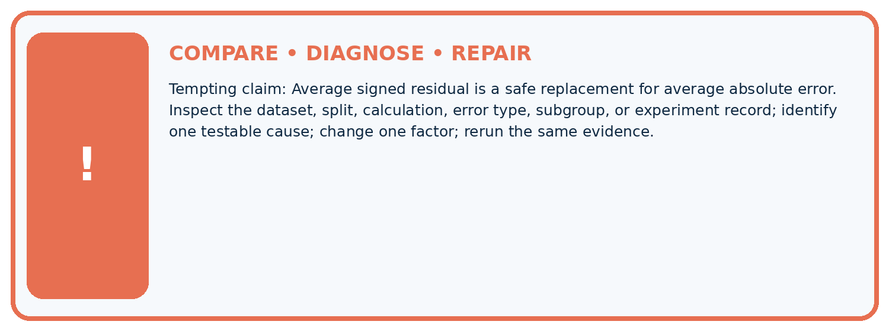
| Evidence record | Expected | Actual | Likely cause / next test |
|---|---|---|---|
| normal case | passes | ||
| boundary case | defined behavior | ||
| missing case | safe fallback | ||
| shifted case | measured limit |
Diagnose one cause and name the cleanest next experiment:
A closer explanation
Choose and document the comparison metric before reviewing final-test results. Neither MAE nor MSE reveals all subgroup patterns or proves safety. Do not remove a large valid error solely because it worsens squared loss.
Student lesson · 8 of 17
Practise together
ML STUDIO
Specify Before You Run
A trustworthy result can be reproduced from the recorded data, code, settings, and evaluation rule.

Experiment record
QUESTION + intended use + success threshold
DATA version + grouped split + leakage check
CODE/preprocessing + features + model + settings + seed
METRICS + positive class + units + denominators
PREDICTIONS + errors + subgroup slices + limitations
HUMAN reviewer + release, revise, limit, or stop decision
Write the minimum record needed to reproduce today's result:
A closer explanation
Changing cm to mm multiplies residuals and MAE/RMSE by 10, but MSE by 100. A loss decrease across reports is not meaningful unless units, evaluated rows and loss definitions match. Retain the per-record residuals for investigation.
Practise with less help: Compute squared loss
Use workbook W2 for the connected example “Absolute and squared loss”. First fill the input and rule boxes. Try the middle steps before asking for a hint. After a hint, try the next step yourself.
| Plan | Do | Check |
|---|---|---|
| What is given? Which rule or procedure applies? | Record each intermediate step. | Does the result follow? What remains unknown? |
Explain your trace to a partner. Your partner points to one step to check. Swap roles on the next case. Each person writes their own explanation.
Check your reasoning
Use the worked case for Absolute and squared loss. Proposed explanation: “A final answer is enough”. Decide whether this explanation is supported. Point to the step or supplied fact that decides; explain your repair if needed.
Answer on your own before discussion. If you are unsure, say which step you need help with.
Explain the picture
Why is quoting MSE as4.67 cm misleading? Point to the relevant step in the picture, then write the changed result and the rule or evidence that supports it.
This is supported practice. Keep the separately named independent case for an attempt before feedback.
Student lesson · 9 of 17
Run the investigation
EVIDENCE LAB
Predict → Run → Calculate → Interpret
Keep the test conditions fixed, record every result, and change only one planned factor.
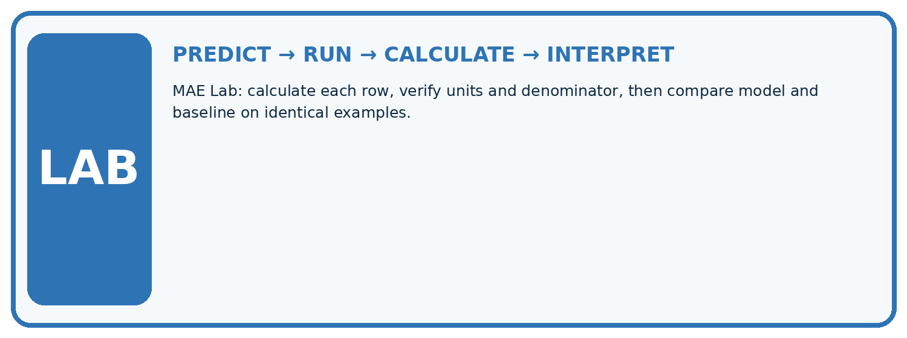
1. Write the hypothesis and expected evidence before running.
2. MAE Lab: calculate each row, verify units and denominator, then compare model and baseline on identical examples.
3. Run one normal, one boundary, one missing, and one shifted case.
4. Calculate the metric from raw counts or row-level errors.
5. Interpret what changed, what did not, and what remains unsafe or unknown.
| Case | Prediction | Actual | Calculation / evidence | Meaning / next test |
|---|---|---|---|---|
| Normal | ||||
| Boundary | ||||
| Missing | ||||
| Shifted |
Plan → try → check
Before trying: what do I expect, and why? While trying: which step could first go wrong? Afterwards: what did I actually observe, and what should change? Keep “not run” if you only traced the procedure.
Student lesson · 10 of 17
Build your understanding
MASTERY
From Knowing the Word to Owning the Idea
Move upward only when you can produce evidence without copying the example.

DEFINE Use all four terms precisely: absolute error, MAE, unit, cancellation.
CALCULATE Reproduce the worked evidence with units and denominator.
TRACE Explain the data, code or decision path.
DIAGNOSE Average signed residual is a safe replacement for average absolute error.
TRANSFER Solve a fresh dataset or model case.
IMPROVE Change one cause and rerun fixed evidence.
DEFEND State intended use, metric, limitation, and human responsibility.
Student lesson · 11 of 17
Connect your project
CUMULATIVE PROJECT
Responsible Plant Classifier
Every week adds one reviewable artifact to the same evidence-based capstone.
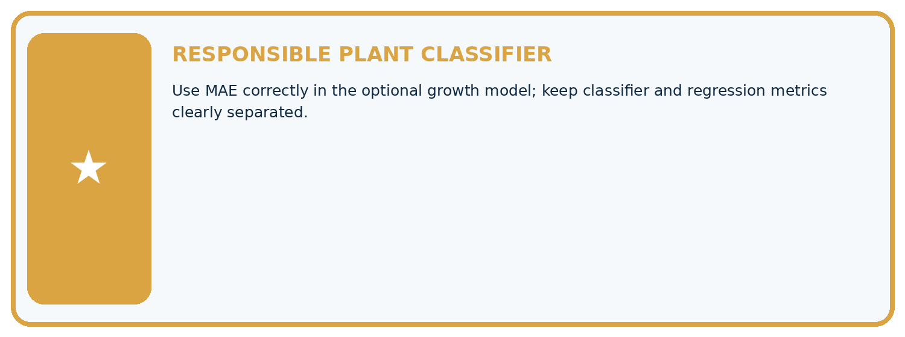
Which requirement or risk does this artifact address?
Which dataset, split, code, and metric version does it use?
What normal and shifted cases were tested?
What remains uncertain or weak?
What decision still belongs to a teacher or qualified human?
My evidence-linked project decision:
Evidence for your project
For your Responsible Plant Classifier, save the input, procedure, observed result and limitation of this check. Label this worked example as practice; use a different, previously unreviewed case when checking independent understanding.
Student lesson · 12 of 17
Show what you know
INDEPENDENT PROOF
Explain • Calculate • Transfer • Defend
Complete this with a fresh case after guided practice and compare it with the mastery criteria.
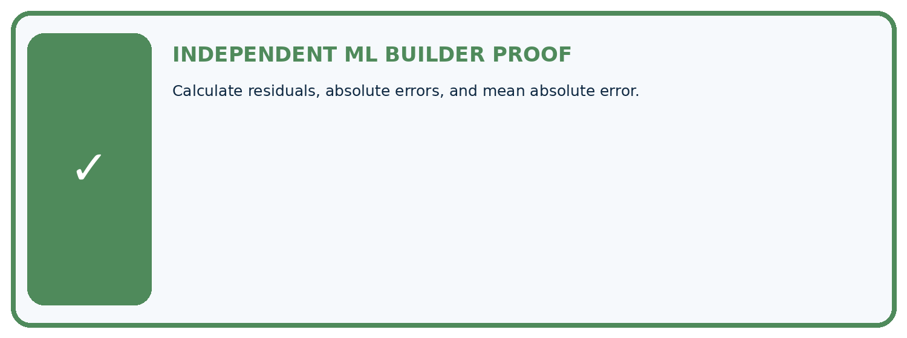
□ Define the task, feature/target roles, and intended-use boundary.
□ Show the calculation, code trace, or experiment record.
□ Test a normal case and one revealing boundary, missing, or shifted case.
□ Diagnose one failure without changing several factors at once.
□ Name a limitation, fairness concern, and the human-review action.
Independent evidence and defense:
My level: □ Not yet □ With one hint □ Independently □ I can teach and defend it
Student lesson · 13 of 17
Study a complete case
Week 21 Worked case
Use the supplied details to practise the weekly concept before attempting the independent question. This case extends the illustrated lesson.
The situation
Actual=[3,5,9], predicted=[2,7,6] cm.
The question
Calculate MAE.
Worked explanation
Absolute errors=[1,2,3]; mean=2 cm. Do not cancel signed errors before taking absolute values.
Explain it in your own words
Which detail supports the answer, and why does it matter?
Trace the supplied case visually
Absolute errors are measured before averaging
| Evidence or stage | Value or result |
|---|---|
| Case 1, actual 3, predicted 2 | 1 |
| Case 2, actual 5, predicted 7 | 2 |
| Case 3, actual 9, predicted 6 | 3 |
Actual=[3,5,9], predicted=[2,7,6] cm.
Calculate MAE.
Absolute errors=[1,2,3]; mean=2 cm. Do not cancel signed errors before taking absolute values.
Student lesson · 14 of 17
Try a new case independently
Independent case: Apply independently
Residuals [-2, 0, 4] m: calculate MAE MSE RMSE and the result of converting to cm.
Attempt this case before feedback. Record any help. Earlier examples below are further practice; a case already practised with feedback cannot establish fresh transfer.
Week 21 Independent application
Close the worked explanation. Apply the idea to this different question without copying.
Actual heights are 4, 8 and 10 cm; predictions are 5, 6 and 13 cm. Calculate absolute errors and MAE.
My answer, with a trace, calculation or supporting evidence
Create and test
Change one relevant detail. Predict the result before testing. Include a boundary or missing-information case when it helps reveal a limit.
My changed input and expected result
Connect to your project
Use MAE correctly in the optional growth model; keep classifier and regression metrics clearly separated.
The evidence I will keep
Your teacher has the independent answer and scoring criteria. Complete the matching workbook week to keep your practice evidence together.
Transfer practice from the original programme
Actual=[3,8,10], predicted=[5,5,11]. Compute signed residuals and MAE. A student averages residuals and gets zero; is that MAE?
Use feedback to improve
Attempt the independent case before hints. Record whether you worked alone, used a hint or followed a model. After feedback, fix the first unsupported step and explain why it changed. A later check uses a changed case, not a copied answer.
Student lesson · 15 of 17
Your lesson route
Start with this question: Compare absolute and squared error without losing track of units.
| By the end, I can | How I will show it |
|---|---|
| Calculate MAE MSE and RMSE | Explain the deciding step, show a trace or test, and state one limit. |
| Explain how squaring changes sensitivity to large errors | Explain the deciding step, show a trace or test, and state one limit. |
| Match the loss and units to the task | Explain the deciding step, show a trace or test, and state one limit. |
Remember → watch and explain → try with help → investigate → try independently → keep project evidence. Your teacher may spread this lesson across several classes.
Keep your first prediction. Compare it with what the evidence shows and explain any change.
Student lesson · 16 of 17
Finish and return
Close your notes. Explain this goal in your own words: Calculate MAE MSE and RMSE
If you are unsure, return to the worked picture and explain one arrow. If you are ready, change an input or assumption and justify your prediction.
Save your workbook evidence. At the next review, try a different case before opening your old answer.
Student lesson · 17 of 17
Supported practice, repair and portfolio
Use this supported practice once, in the browser or on paper. Keep the reserved independent assessment for a separate first attempt before teacher feedback.
Compare absolute and squared error without losing track of units.
Practice 1: explain the deciding evidence
Which labelled step matches this detail? RMSE=sqrt(14/3), approximately2.16 cm.
1. Absolute errors
2. Root squared error
3. Squared errors
Hint if needed: Read the steps in the pictorial case. Match the supplied detail to the stage that performs or records it.
After your attempt, compare with the supported explanation: Root squared error RMSE=sqrt(14/3), approximately2.16 cm. Read the picture in order. RMSE=sqrt(14/3), approximately2.16 cm. The arrows show which recorded input or intermediate result each decision uses. Explain the deciding step aloud before checking the changed case; pointing to the final answer alone does not show how it follows.
Practice 2: explain the deciding evidence
Changed-case practice: Convert every residual to millimetres. Which conclusion is supported by the supplied facts?
1. MAE becomes20 mm; MSE becomes1400/3 mm²; RMSE becomes about21.60 mm.
2. This one example guarantees correct results for every future input.
3. We can decide the result without examining the changed input or the procedure.
Hint if needed: Use the changed condition and the deciding step in the pictorial trace. The answer must say what follows from those facts.
After your attempt, compare with the supported explanation: MAE becomes20 mm; MSE becomes1400/3 mm²; RMSE becomes about21.60 mm. Residuals scale by10; squares scale by100, while the square root returns a length unit.
Repair a missing building block
Review Mean, Median, and Baselines (ai-4/20). Goal: Fit mean and median constant baselines on training targets. Short practice: Does either original baseline win under evaluation MAE? Point to the relevant step in the picture, then write the changed result and the rule or evidence that supports it.. Return to this week and explain what you changed.
Review Error Analysis (ai-4/18). Goal: Categorize development errors using evidence. Short practice: What evidence would support the claim that a change helps fresh dim-light images? Point to the relevant step in the picture, then write the changed result and the rule or evidence that supports it.. Return to this week and explain what you changed.
Review Confusion Matrix (ai-4/15). Goal: Build a labelled confusion matrix from matched reference and prediction pairs. Short practice: Why is adding TP alone without reducing FN an incorrect revision? Point to the relevant step in the picture, then write the changed result and the rule or evidence that supports it.. Return to this week and explain what you changed.
Predict, run and debug
The browser lab lets you edit the supported Python examples already included in this lesson. Predict first, run, inspect the actual output or error, change one input, then run again. Keep code, predictions, actual results and a reasoned revision together. On paper, label your result as a trace rather than an execution.
Keep your completed work
Use Download completed work in the hosted lesson to export your answers, reflections, practice feedback and code-run evidence. Open the HTML copy to read or print it. Drafts stay in this browser when storage is available; clear drafts on a shared device.